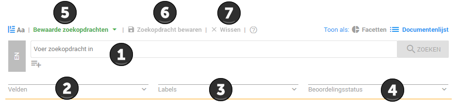
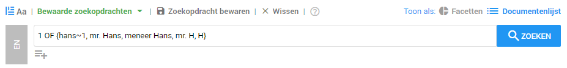

De geüploade datasets moeten vervolgens uitgezocht worden. Het is bij deze stap belangrijk dat er een duidelijk onderscheid gemaakt wordt tussen de verschillende soorten informatie. Om deze gegevens te kunnen vinden in een dataset zijn er verschillende zoekmogelijkheden. Zo kan er gezocht worden met zoekopdrachten, maar ook kan er bijvoorbeeld op datum gezocht worden.
In ZyLAB ONE zijn er veel zoekmogelijkheden om uw zoekopdracht specifieker te maken. Voor het uitvoeren van een zoekopdracht kunt u gebruiken maken van de zoekbalk. U kunt een zoekopdracht invullen in de zoekbalk. Op deze manier kunt u bijvoorbeeld op zoek gaan naar vergunning gegevens. Deze gegevens kunt u zoeken door een standaard zoekopdracht te gebruiken. Deze kunt u, als u deze actief opslaat, vinden bij Bewaarde zoekopdrachten (punt 5 hieronder). Het is mogelijk om de standaard zoekopdracht te verfijnen. Hoe dit werkt zal hieronder stapsgewijs uitgelegd worden aan de hand van de zoekbalk.
De zoekbalk
De zoekbalk ziet er als volgt uit:

De geüploade datasets moeten vervolgens uitgezocht worden. Het is bij deze stap belangrijk dat er een duidelijk onderscheid gemaakt wordt tussen de verschillende soorten informatie. Om deze gegevens te kunnen vinden in een dataset zijn er verschillende zoekmogelijkheden. Zo kan er gezocht worden met zoekopdrachten, maar ook kan er bijvoorbeeld op datum gezocht worden.
In ZyLAB ONE zijn er veel zoekmogelijkheden om uw zoekopdracht specifieker te maken. Voor het uitvoeren van een zoekopdracht kunt u gebruiken maken van de zoekbalk. U kunt een zoekopdracht invullen in de zoekbalk. Op deze manier kunt u bijvoorbeeld op zoek gaan naar vergunning gegevens. Deze gegevens kunt u zoeken door een standaard zoekopdracht te gebruiken. Deze kunt u, als u deze actief opslaat, vinden bij Bewaarde zoekopdrachten (punt 5 hieronder). Het is mogelijk om de standaard zoekopdracht te verfijnen. Hoe dit werkt zal hieronder stapsgewijs uitgelegd worden aan de hand van de zoekbalk.
De zoekbalk
De zoekbalk ziet er als volgt uit:

Door middel van deze zoekopdracht worden er documenten gezocht waar tenminste 1 keer deze naam voorkomt. Er is een fuzzy (~) gebuikt bij Hans. Dit houdt in dat alle mogelijk opties van Hans met 1 afwijkend karakter ook gevonden zullen worden. Enkele voorbeeld zoekopdrachten staan hieronder.
| Uitleg zoekopdracht | Naam zoekopdracht | Zoekopdracht |
|---|---|---|
| Vergunning | Vergunning | milieuvergunning OR vergunning OR milieu |
| Relevant correspondentie | Correspondentie | 3 of {Hans, Heks, vergunning, milieu, meting, afval, afvalstoffen, dumpen} |
| Betrokkenheid bestuur | Betrokkenheid | 3 of {Hans, Heks, salaris, afval, milieu, afvalstoffen, broodhuis, dumpen, vergunning, schade, gevaar, verwijderen, stiefmoeder, meting} |
| Contact tussen Hans en Heks | Contact | Hans AND Heks |
| Metingen | Meting | meting OR metingen OR meet |
| Milieugegevens | Gegevens | 2 of {afval, milieu, afvalstoffen, dumpen, vergunning, schade, meting} |
| Fraude | Fraude |
3 of {Hans,Heks,fraude,sjoemelen,vergunning,broodhuis,stiefmoeder,meting} |
Zodra u een grote hoeveelheid data door moet zoeken kan het handig zijn om gebruik te maken van een tijdsframe. Deze techniek zorgt ervoor dat alleen de documenten binnen een bepaald tijdsframe weergeven worden. Een voorbeeld hiervan is:
Er komt een verzoek binnen over de vergunningen die de fabriek bezit in de periode van 2015 t/m 2020. Via de functie 'Fields' kunt u kiezen welke field u wilt toevoegen. U doet dit doormiddel van het pijltje in de optie 'select a field' aan te klikken. Vervolgens kunt u een field naar keuze invoeren, zoals in dit geval 'document date'. Hierna kunt u een datum kiezen via het 'Selecteer een datum' icoontje  .
.
In het veld daaronder volgt u dezelfde stappen en vult u de gegevens van 2020 in. In de middelste knop kunt u kiezen voor kleiner dan, groter dan, is gelijk aan of is niet. Door hier een keuze in te vullen kunt u een tijdsframe instellen. Controleer goed of de data klopt die u heeft ingevuld, zodat uw tijdsframe correct is. Na het correct invullen van deze gegevens worden alleen de documenten in het door u gegeven tijdsframe weergegeven.